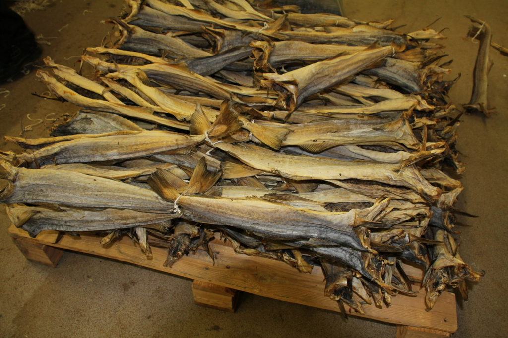

『魚で始まる世界史: ニシンとタラとヨーロッパ』
公開日：
")
魚で始まる世界史: ニシンとタラとヨーロッパ (平凡社新書)
- 作者: 越智敏之
- 出版社/メーカー: 平凡社
- 発売日: 2014/06/13
- メディア: 新書
- この商品を含むブログ (6件) を見る
著名な文学作品を引きながら*1、お魚――とくにニシンとタラ――が世界史にどんな影響を与えたのかを論じた新書。巻末にはお魚レシピなんかも載っていて、読んだ後、無性にニシンとタラが食べたくなった。仕方ないので、その日の夕食は近所のスーパーでサバの南蛮漬けを食べた。なんでサバなのかというと、お惣菜で三割引きだったので……
- 第1章 魚と信仰
- 大きな魚と小さな魚
- 魚の女神
- 聖餐式の魚
- ユダヤの魚
- 第2章 フィッシュ・デイの政治経済学
- 汝、食べることなかれ
- 熱い肉＜ホット＞と冷たい魚＜コールド＞
- 断食日の魚
- 充満する粘液
- ポリティカル・フィッシュ・デイ
- 第3章 ニシントハンザ、オランダ
- ニシン以上に殺す
- ニシンとヴァイキング
- ハンザ
- ウィレム・ブーケルス
- ニシンの戦い
- ニシンの骨の上に建つ街
- 第4章 海は空気のように自由なのか？
- レッド・ヘリング
- 海は誰のものか
- 『自由海論』
- アサイズ・ヘリングとランド・ケニング
- 海洋主権
- オランダの衰退
- 第5章 タラから始まる世界史
- 『テンペスト』
- 魚にされたキャリバン
- ストックフィッシュとバイキング
- 塩ダラと大航海時代
- アイスランディック・フェア
- ジョン・カボット
- ニューファンドランドで覇を唱えろ
- ジョン・スミスとニューイングランド
- 一六〇○年目の軌跡
- 汚れた魚
- 第6章 タラの漁師は自由にする
- 聖なるタラ＜セイクリッド・コッド＞
- 自由の海
- ニューイングランド躍進
- 独立戦争前夜
- 新たな聖性
- 第7章 魚はどんなふうに料理されたのか？
- マグロ
- ウナギ
- ニシン
- タラ
もしあなたが無人島で独りで暮らすことになったら、まず何を食べるだろうか。まぁ、いろいろ選択肢はあるだろうけれど（ないかもだけど）、かなり高い確率でそれは魚なのではないだろうか。野草・果実を採取するよりはちょっと難易度が高いかもしれないけれど、季節を問わずそれなりに数がいて、野獣のように反撃される恐れが少なく、コメのように時間と忍耐を要しない。きっと古代の人はかなり魚のお世話になったに違いない。
その証拠に、古代メソポタミアの神話からキリスト教の聖典に至るまで、魚の出てこない話はない。シュメールの主神・イナンナ（アッカドのイシュタル）は
魚の外套を羽織り、足には魚をサンダルとして履き、手には魚の笏を持ち、魚の王座につき
という姿で、魚たちを従えて船で川を遡上したのだそうな（どんだけ魚好きやねん）。イシュタルは豊穣の神だったけれど、それは古代人が魚にもっていたイメージでもある（魚は多産だから、多少はね？）。このイメージはユダヤを通じてキリスト教にも伝えられていた。
イエスは来て、パンを取って弟子たちに与えられた。魚も同じようにされた。
聖餐といえばパンとワインのイメージだけれど、魚だって重要な役割を果たしていた。イエスが裏ワザで食べ物を無限増殖したとき（きっとコナミコマンドなんかを入力したんだろう）も、元手は「五つのパンと二尾の魚」だった。
また、ローマ帝国の迫害から逃れてカタコンベで暮らしているときも、ギリシャ語の“魚（ΙΧΘΥΣ：イクトゥス）”をキリスト教者の符牒として用いていたらしい。これは“ΙΗΣΟΥΣ ΧΡΙΣΤΟΣ ΘΕΟΥ ΥΙΟΣ ΣΩΤΗΡ （イエス、キリスト、神の、子、救世主）”の頭文字を並べたものなのだそうだけれど、ペテロがイエスに「これからは魚でなく人間を取る漁師になるのだ」と言われたように、魚は信者のメタファーでもあった。
また、魚にはキリスト教が禁ずる肉欲を抑える作用があると信じられていた。
というのも、西洋の古い医学では、万物を構成する四元素、つまり空気・火・水・土はそれぞれ温湿・温乾・冷湿・冷乾という特質をもっており、これは人間に充満している4つの体液、つまり血液、胆汁、黒胆汁、粘液に対応していると考えられていた。人間の性格はこの体液の割合で決まっており、バランスを崩すと病気になる。まぁ、西洋版の“陰陽五行説”やね。
そしてこれを発展させると、“医食同源”、つまり足りないモノを補うことで健康を回復したり、欲望をコントロールすることができるという考え方が生まれる。西洋の場合、精液は血液から作られると考えられていたので、性欲（≒体内に充満する精液）を抑えるには血液に対応する火（温乾）の質を押さえればよく、そのためには水（冷湿）の質を持つ食材、魚を食べるのがよい。
そこで、キリスト教徒は金曜日を“お魚を食べる日（フィッシュ・デイ）”としていた。また、保存手段のない時代、お肉を食べられるのは限られた季節、限られた人たちだけだった。そこで、“政治経済学的に”、つまりお肉需要を抑えたり、漁民の生活を保護したりするため、人為的にフィッシュ・デイが利用されることもあった。そしてそれは1年の半分に及ぶこともあったという。
要するに、中世では世界の1/3が*2、年の1/2、魚ばっかり食っていたということになる。
当然、この需要を満たすための供給システムが大規模に整えられていく。

とくにアホほど獲れるニシンは重要だった。自分は知らなかったのだけど、ニシンの群れは物凄くて、棒を挿せば立つほどなのだという。ニシンは産卵時に群れで沿岸に押し寄せ（“群来（くき）”と呼ばれる）るが、放出されるオスの白子で海岸が白く白濁するほどなのだそうだ。このタラの供給・加工・販売を握って繁栄したのがハンザ同盟で、沿岸にやってくるニシンを獲り、規格化された方法で塩樽にして分別、売り捌く。
しかし、ニシンの回遊ルートが変わると、次第にオランダが優勢になっていく。オランダ商人は岸でニシンを待つことはせず、自ら外洋に乗り出し、船のデッキで塩漬けを作っていたのだそうな。この塩漬けニシンはすべてオランダに一度集められ（直接外国へ売るのは禁止だった）、アムステルダム（最初は小さな漁村だった！）でハンザ同盟のように規格化された樽に詰め直されたのち、輸出された。
一説によると、ノルマン・コンクェストやシチリア王国の建国に代表されるバイキングの南下も、ニシンを追って起こったことなのだという。

本書のもう一匹（？）の主役は、タラ。タラを干したストックフィッシュは、叩いて人を殺せるぐらいにカチンコチンになる（日本で言えばカツヲブシかな？）。このストックフィッシュはかなり長い間保存できるため、ヴァイキングの遠洋航海にとって不可欠であったという。彼らはグリーンランドから北アメリカまで行っていたらしいけれど、これもタラを追いかけてるうちに着いちゃったって感じなのかもね。なんせ魚以外に食うものロクになさそうだし……。
 (アフタヌーンKC)")
- 作者: 幸村誠
- 出版社/メーカー: 講談社
- 発売日: 2015/06/23
- メディア: コミック
- この商品を含むブログ (11件) を見る
タラのはなし、そのうち『ヴィンランド・サガ』にも出てこないかなぁ（ﾁﾗｯﾁﾗｯ
ストックフィッシュは塩漬けニシンよりも美味しかったらしく、これに目をつけたハンザ同盟はストックフィッシュの市場をも独占してしまう。そして北海ではオランダがニシンを独占。行くところのなくなったイングランドが目をつけたのが、アイスランドのタラだった。イギリスは塩に恵まれていなかったので、遠洋で獲ったタラを船上ですばやく大量の塩で漬ける「グリーンフィッシュ」（塩に恵まれたフランスに多い）は作れず、獲ったあと最小限の塩漬けをして、港についてから干すタイプのタラ（「プアジョン」と呼ばれたりする）を作っていた。しかし、持ちがいいのは実はこのイングランドタイプのタラ（塩タラ）だったらしい。
オランダ人もスペイン人もポルトガル人も、ニューファンドランドの魚がなければ西インド諸島に一隻も船を送ることができないだろう。そこで塩漬けされ、日干しされた魚以外に、傷まず鎖もせずに赤道を越えうる魚は存在しないからだ。
七つの海を股にかける大英帝国。それは塩タラのおかげだったのかもしれない。

そしてもう一人（？）、タラに感謝しなきゃいけない人たちがいた。ピルグリムファーザーズをはじめとする、アメリカに初めて入植した人たちだ。彼らは、麦が無事に収穫できるまでをタラで食いつないだ。食べなかったタラは、畑の肥やしにして収穫に役立てることができた*3。とくにマサチューセッツ州ボストンはタラ漁で栄えた町で、議事堂には“聖なるタラ”が飾られているのだそうな。
本書は、世界史の出来事をなんでもかんでも魚のおかげ、魚のせい、魚の陰謀にしてしまう本じゃない。単に世界史を見る視点を“魚”にしてみたというだけのことだ。でも、そこから見える世界史は、教科書で知っている世界史とまた違う色で彩られていて、ぜんぜん違ったふうに見える。新鮮で面白いと思った。
最後に
残念なのは、本書の醍醐味である文学的な部分をあまり堪能できなかったこと。これはまったく自分のせいで、実のところ、シェイクスピアは『ヴェニスの商人』しかロクに読んでない。あとはオードリー・ヘプバーンの『ロミオとジュリエット』を観たことがあるが、正直おっぱいしか見てなかった。もうちょっと教養というものを持たなきゃならんのかもしれんと反省させられた。